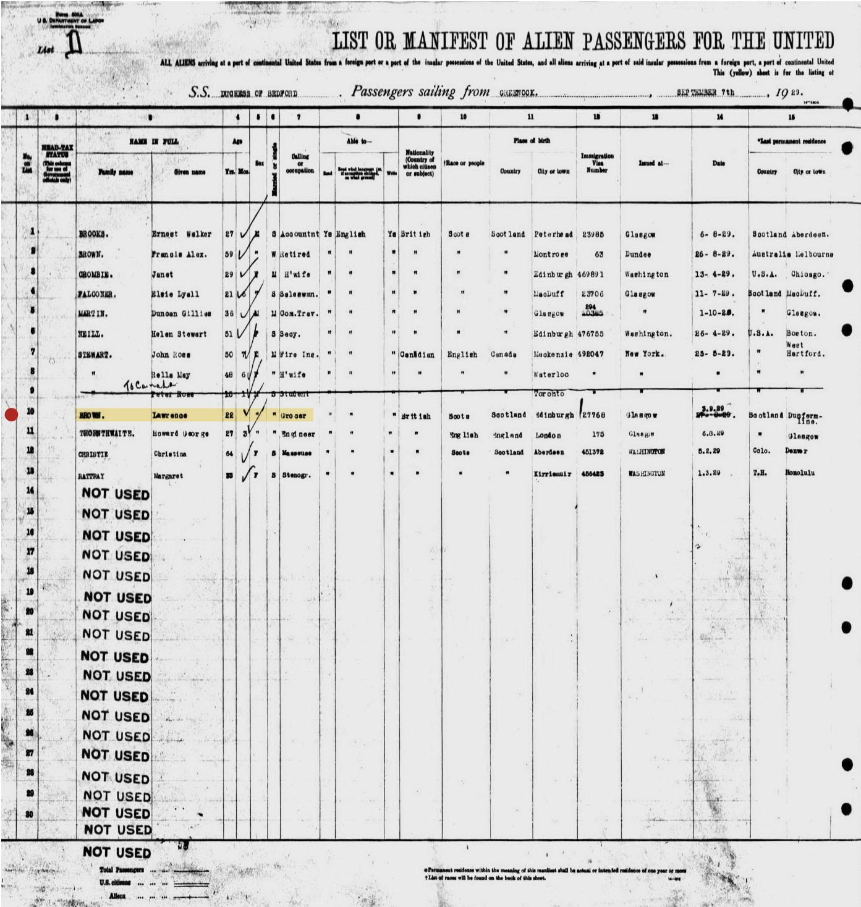

Item 24 · September 7, 1929
U.S. alien passenger manifest, List D, left half: Duchess of Bedford
The document

This copy carries yellow highlighting or red outlining added for the book site. It is not on the original.
Tap an image to open it full size.
Transcription, word for word
Everything as written, including misspellings. [?] marks an uncertain reading. Struck-through words are marked as struck through. Notes in square brackets describe the page and are not part of it.
[Printed, top left] Form 630A. U.S. DEPARTMENT OF LABOR. IMMIGRATION SERVICE. [Handwritten] List D [Printed] LIST OR MANIFEST OF ALIEN PASSENGERS FOR THE UNITED [STATES — cut off] [Printed, small type] ALL ALIENS arriving at a port of continental United States from a foreign port or a port of the insular possessions of the United States, and all aliens arriving at a port of said insular possessions from a foreign port, a port of continental United States, or another insular possession, ... This (yellow) sheet is for the listing of [cut off] S.S. DUCHESS OF BEDFORD. Passengers sailing from GREENOCK, SEPTEMBER 7th, 1929. [Columns] 1 No. on List | 2 Head-Tax Status | 3 Name in Full: Family name, Given name | 4 Age: Yrs., Mos. | 5 Sex | 6 Married or single | 7 Calling or occupation | 8 Able to: Read, Read what language, Write | 9 Nationality (Country of which citizen or subject) | 10 Race or people | 11 Place of birth: Country, City or town | 12 Immigration Visa Number | 13 Issued at | 14 Date | 15 Last permanent residence: Country, City or town 1 | BROOKS. | Ernest Walker | 27 | ✓ M | S | Accountnt | Yes English Yes | British | Scots | Scotland Peterhead | 23985 | Glasgow | 6-8-29. | Scotland Aberdeen. 2 | BROWN. | Francis Alex. | 59 | ✓ " | W | Retired | " " " | " | " | " Montrose | 63 | Dundee | 26-8-29. | Australia Melbourne 3 | CROMBIE. | Janet | 29 | ✓ F | M | H'wife | " " " | " | " | " Edinburgh | 469891 | Washington | 13-4-29. | U.S.A. Chicago. 4 | FALCONER. | Elsie Lyall | 21 | ✓ " | S | Saleswmn. | " " " | " | " | " MacDuff | 23706 | Glasgow | 11-7-29. | Scotland MacDuff. 5 | MARTIN. | Duncan Gillies | 36 | ✓ M | M | Com.Trav. | " " " | " | " | " Glasgow | 294 [above a struck-through number] | " | 1-10-28. | " Glasgow. 6 | NEILL. | Helen Stewart | 51 | ✓ F | S | Secy. | " " " | " | " | " Edinburgh | 476755 | Washington. | 26-4-29. | U.S.A. Boston. 7 | STEWART. | John Ross | 50 | 7 ✓ M | M | Fire Ins. | " " " | Canadian | English | Canada Mackenzie | 492047 | New York. | 25-5-29. | " West Hartford. 8 | " | Rella May | 48 | 6 ✓ F | " | H'wife | " " " | " | " | " Waterloo | " | " | " | " " 9 | " | Peter Ross | 15 | 1 ✓ M | S | Student | " " " | " | " | " Toronto | " | " | " | " " [This whole line is struck through, and "To Canada" is written above it] 10 | BROWN. | Lawrence | 22 | ✓ " | " | Grocer | " " " | British | Scots | Scotland Edinburgh | 27768 | Glasgow | 3.9.29 [written above another date that is struck through] | Scotland Dunfermline. 11 | THORNTHWAITE. | Howard George | 27 | 3 ✓ " | " | Engineer | " " " | " | English | England London | 175 | Glasgow | 6.8.29 | " Glasgow 12 | CHRISTIE | Christina | 64 | ✓ F | S | Masseuse | " " " | " | Scots | Scotland Aberdeen | 451372 | WASHINGTON | 5.2.29 | Colo. Denver 13 | RATTRAY | Margaret | 33 | ✓ F | S | Stenogr. | " " " | " | " | " Kirriemuir | 456423 | WASHINGTON | 1.3.29 | T.H. Honolulu 14–31 | [Each line stamped] NOT USED [Bottom of form, printed] Total Passengers ... U.S. citizens ... Aliens ... [blank] [Printed note at bottom] *Permanent residence within the meaning of this manifest shall be actual or intended residence of one year or more. †List of races will be found on the back of this sheet.